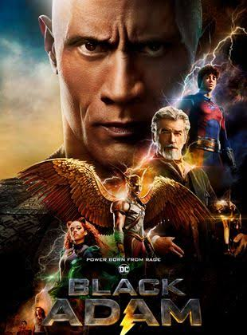

Black Adam
Dans l’antique Kahndaq, l’esclave Teth Adam avait reçu les super-pouvoirs des dieux. Mais il en a fait usage pour se venger et a fini en prison. Cinq millénaires plus tard, alors qu’il a été libéré, il fait régner sa conception très sombre de la justice dans le monde. Refusant de se rendre, Teth Adam doit affronter une bande de héros d’aujourd’hui qui composent la Justice Society – Hawkman, le Dr Fate, Atom Smasher et Cyclone – qui comptent bien le renvoyer en prison pour l’éternité.